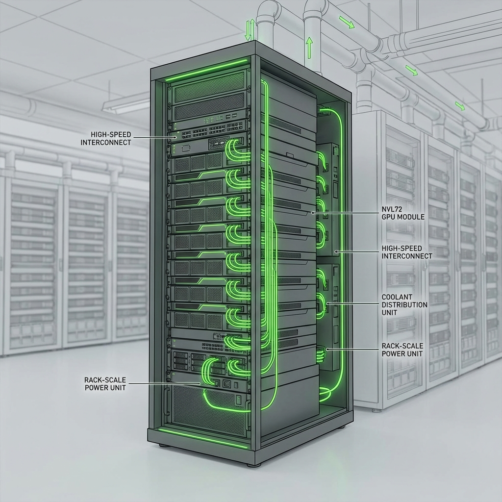

The numbers are almost incomprehensible. 50 petaFLOPS of FP4 inference performance. 288GB of HBM4 memory. 336 billion transistors. NVIDIA's Vera Rubin platform isn't just an upgrade—it's a fundamental recalibration of what's possible in AI computing.
Announced at CES 2026 and detailed at GTC 2026 in March, the Vera Rubin platform with its flagship H300 GPU is now shipping to customers. For an industry already struggling to digest the computational demands of current-generation models, Rubin arrives as both solution and challenge: it makes trillion-parameter models practical, but also ensures that even larger models will follow.
The Performance Leap
Let's talk about what 50 petaFLOPS actually means. The H300 delivers five times the inference performance of the Blackwell architecture it replaces. For training, it hits 35 petaFLOPS—3.5x faster than its predecessor. These aren't incremental gains; they're generational leaps that change the economics of AI development.
The memory subsystem is equally impressive. 288GB of HBM4 provides 22 TB/s of bandwidth—a 2.8x increase over Blackwell. For trillion-parameter models that need to shuffle massive amounts of data, this bandwidth is the difference between a model that trains in months versus one that trains in weeks.
Designed for Agentic AI

NVIDIA isn't just building GPUs—it's building "AI factories." The Vera Rubin NVL72 rack integrates 72 Rubin GPUs and 36 Vera CPUs into a single coherent system. When combined with NVIDIA's Groq 3 LPX racks, the platform can deliver 35x higher inference throughput per megawatt than previous generations.
The architectural focus is clear: Rubin is designed for agentic AI. Models that reason, plan, and execute over extended sequences require different computational patterns than simple inference. Rubin's design optimizes for these emergent workloads.
The Vera CPU Integration
For the first time, NVIDIA is seriously addressing the CPU side of AI infrastructure. The Vera CPU accompanies the Rubin GPU, providing general-purpose compute that's tightly integrated via NVLink 6 interconnects offering 3.6 TB/s of bidirectional GPU-to-GPU bandwidth.
This integration matters because modern AI workloads aren't just GPU-bound. Data preprocessing, orchestration, and post-processing all require substantial CPU resources. Vera ensures these tasks don't become bottlenecks.
Efficiency: The Hidden Feature
Raw performance is impressive, but efficiency determines economics. NVIDIA claims Rubin delivers up to 10x more inference throughput per watt than Blackwell. For data center operators facing power constraints and carbon commitments, this efficiency is transformative.
The implications extend to deployment timelines. Data centers that would have needed months of infrastructure upgrades to support AI workloads can now deploy Rubin systems in existing power envelopes. The constraint shifts from "can we power this?" to "can we afford not to?"
Vera Rubin Space Module
In a move that seems almost gratuitous, NVIDIA also announced the Vera Rubin Space Module—designed for orbital data centers. Several commercial space companies are already utilizing the platform, suggesting that NVIDIA's ambitions extend even to compute infrastructure in orbit.
This isn't just marketing theater. Orbital data centers offer genuine advantages: abundant solar power, vacuum cooling, and reduced latency for global coverage. Rubin's efficiency makes these advantages economically viable for the first time.
The Roadmap Ahead
NVIDIA's updated data center roadmap, revealed at GTC 2026, shows Rubin as the foundation for the next generation of AI workloads. Production shipments are ramping through the second half of 2026, with full availability expected by early 2027.
For AI developers, Rubin means models that were previously too expensive to train become feasible. For businesses, it means AI capabilities that were previously out of reach become accessible. For competitors, it means catching up just got significantly harder.
The trillion-parameter era is no longer theoretical. NVIDIA just delivered the hardware to make it real.